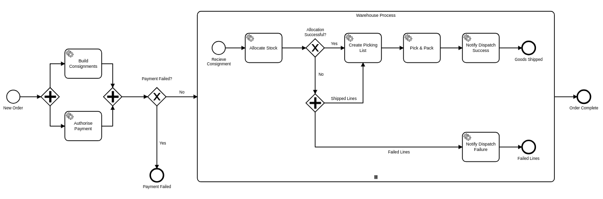

Tom Greasley
tom.greasley@wundermantompson.com
cloud team - architect
Geek Speak
- Any relevant topic
- Open, fun, interesting
- Informal, technical
- Anyone can do one
- (Hint!)
Geek Speak
- TypeScript
- Apprentice Graduation
- Model-T
- The Future of AI
Why Camunda/Zeebe?
- Simple, stable, flexible
- Does one thing well
SAP & Model-T
- Provision customer cloud environments
- Custom solution
- Versioned
- Long-running processes
- Multiple APIs/tools/systems
- Orchestration
Workflow Engines
- Nothing new
- jBMP
- Drools Workflow
- Activiti
- Copper
- Commerce Platforms
Workflow Engines
- Model & co-ordinate business process
- Work required to achieve a goal
- Not just computer oriented processes
- People, documents, decisions, actions
- Internal, external
Workflow Engines
- Order fulfillment
- CMS content approval
- Product image creation
Microservice Coordination
- Software only
- Orchestration
- Tracking/Reporting
BPMN
- Industry standard
- Minimal, yet expressive business process notation
- Decomposable
- http://www.bpmb.de/images/BPMN2_0_Poster_EN.pdf
- https://www.omg.org
What is Camunda?
- https://camunda.com/
- https://github.com/camunda
- Freemium pricing model, source available
- Java based workflow engine
- Standalone / embedded
- Clusterable
- RDMS persistence
- Excellent Spring integration
- REST API
What is Camunda?
- Highly customisable
- Tool, not an application
- Uses the DB for cluster co-ordination
- Has monitoring/management UI
- Mature
- Other useful siblings
- Process design tools
When should I use it?
- You need workflow now
- Your workflow uses all of BMPN
- Your workflow involves people
- You require moderate scalability
- You have good DB engineers
What is Zeebe?
- Camunda's new, little brother
- Microservice orchestration
- Basis for Camunda Cloud
- https://blog.camunda.com/post/2019/07/the-zeebe-story/
What is Zeebe?
- https://zeebe.io/
- https://github.com/zeebe-io/zeebe
- Basis for Camunda Cloud
- https://blog.camunda.com/post/2019/07/the-zeebe-story/
- Free, for now, source available
What is Zeebe?
- Focused subset of BMPN
- All async
- Based on RocksDB
- RAFT consensus
- Semi-persistent
- gRPC + clients
When should I use it?
- If you are feeling brave
- You use microservices
- You need flexibility
- You need to really scale
- You have good devops
Compare & Contrast
- Camunda has full BMPN support
- Camunda allows greater control over flow
- Camunda persists data
- Camunda has a richer feature set
- Zeebe is very new
- Zeebe is designed to scale
- Zeebe is much more focused
- Zeebe requires additional infrastructure
Katezenfutter Order Process

Katezenfutter Order Process
- Simple decisions
- Fork/Join
- Multi-instance subprocesses
- Versioning